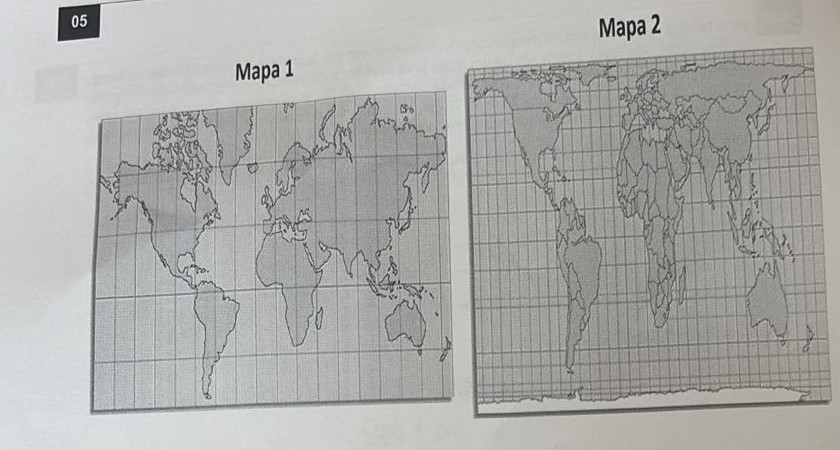
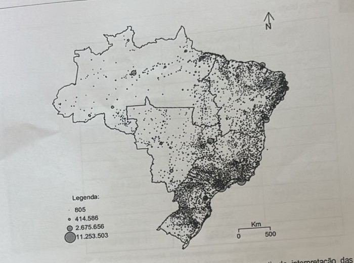
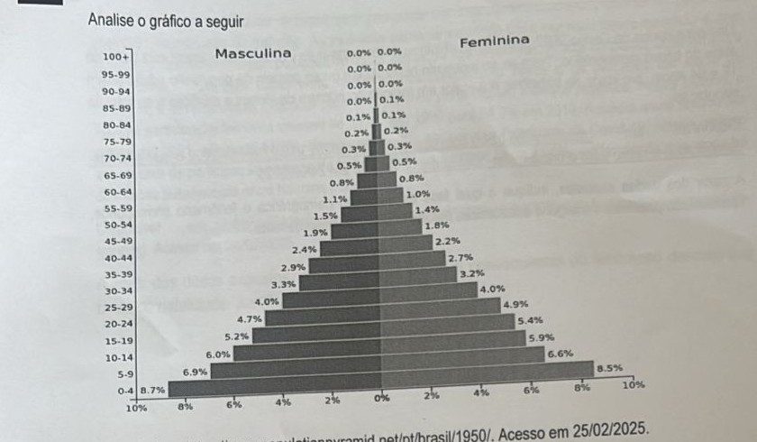

Professor: Leonardo
As coordenadas geográficas têm uma longa história que remonta às civilizações antigas. A necessidade de se orientar e explorar o mundo levou ao desenvolvimento de sistemas rudimentares de coordenadas. No entanto, foi com o avanço da ciência e da tecnologia que as coordenadas geográficas se desenvolveram em sua forma atual.
Os primeiros registros conhecidos de uso de coordenadas geográficas remontam à antiga civilização grega. No século III a.C., o astrônomo Hiparco propôs o sistema de latitude e longitude, que estabeleceu a base para o sistema de coordenadas geográficas que utilizamos hoje. Ao longo dos séculos, diferentes civilizações e estudiosos contribuíram para o desenvolvimento e refinamento das coordenadas geográficas.
Disponível em https://estudeprisma.com/a/coordenadas-geograficas. Acesso em 24/02/2025.
A partir das informações expostas, explique quais foram os primeiros referenciais considerados pelas antigas civilizações para criar seus sistemas de localização, considerando outros exemplos que servem à mesma função.
O fotoperíodo é definido como a duração do dia em relação à noite em um período de 24 horas e fotoperiodismo é a capacidade de um organismo em perceber o comprimento do dia.
Ao longo da evolução as espécies desenvolveram receptores específicos para detectar variação no fotoperíodo e controlar endogenamente os processos fisiológicos em sincronia com a mudança de luz no ambiente.
O fotoperiodismo evoluiu com uma resposta adaptativa conferindo vantagens essenciais para a perpetuação das espécies.
Disponível em https://agroadvance.com.br/blog-fotoperiodo-fotoperiodismo/. Acesso em 23/02/2025.
A partir do texto e com base no entendimento dos movimentos realizados pelo planeta Terra, explique:
a) Quais são os mecanismos que geram a variação do fotoperíodo ao longo do ano?
b) Quais são as regiões do planeta em que essa variação é mais intensa?
Um grupo de professores, após receber um prêmio em uma loteria, decide por realizar uma viagem para a Europa. Saindo da cidade de Cuiabá, situada na longitude aproximada em 60° Oeste, às 08:00 do dia 05/07/2025, eles embarcaram em um voo de 17 horas de duração, com destino à cidade de Moscou, na Rússia, localizada em 45° Leste.
Considerando que a Europa adotava, no período em questão, o horário de verão, indique o dia e o horário de chegada à cidade de destino, pelo fuso horário local. Apresente seus cálculos na resolução.
Uma bióloga realiza um estudo de espécies de mamíferos em um fragmento de Mata Atlântica no litoral de São Paulo. Para isso, ela dispõe de um mapa para sinalizar a distribuição dos animais nas diferentes partes dos municípios visitados. Ao final de sua pesquisa, ela observou que em seu mapa o percurso realizado foi representado por uma linha de 15 cm. Utilizando um aplicativo em seu celular, ela verificou que a distância total percorrida durante os vários dias de estudo foi de 120 km.
Com base nos dados fornecidos, calcule a escala numérica do mapa utilizado. Apresente seus cálculos na resolução.

Disponível em https://www.passeidireto.com/arquivo/. Acesso em 23/02/2025.
A partir da interpretação dos mapas, responda:
a) Qual é o tipo de distorção que cada mapa apresenta?
b) Qual dos mapas pode ser considerado eurocêntrico? Justifique sua resposta.
Analise a tabela a seguir
| País | População absoluta (milhões de hab.) | Área total (km²) |
|---|---|---|
| Bangladesh | 164 670 | 148 000 |
| Índia | 1 339 180 | 3 287 260 |
| Japão | 127 484 | 377 947 |
| Paquistão | 197 016 | 796 100 |
| Nigéria | 190 886 | 923 770 |
| China | 1 409 517 | 9 600 001 |
| Indonésia | 264 991 | 1 904 570 |
| Estados Unidos | 324 459 | 9 831 510 |
| Brasil | 208 494 | 8 515 759 |
| Rússia | 143 990 | 17 098 240 |
Fonte: IBGE. Disponível em http://paises.ibge.gov.br/#/pt. Acesso em 20/06/2020.
A partir dos dados expostos, responda:
a) Diferencie os conceitos de populoso e povoado.
b) Dentre os países apresentados, qual pode ser considerado o mais povoado e o menos povoado? Justifique sua resposta.

O mapa apresenta a distribuição populacional no território brasileiro. A partir da interpretação das informações apresentadas, quais fatores humanos (políticos, históricos, sociais, econômicos) podem ser considerados para explicar o quadro observado?
Analise o gráfico a seguir

Disponível em https://www.populationpyramid.net/pt/brasil/1950/. Acesso em 25/02/2025.
A partir da interpretação dos dados apresentados, responda:
a) A qual fase da transição demográfica a pirâmide etária apresentada corresponde?
b) A julgar pela composição do gráfico, como pode ser descrito o comportamento das taxas de natalidade e mortalidade no período em questão?
Os novos dados do Censo 2022 que o IBGE divulgou nesta sexta-feira indicam que o Brasil está perto do auge do bônus demográfico. Trata-se do momento histórico em que a parcela da população adulta (entre 15 e 64 anos), em idade de trabalhar, é a maior em relação ao número de idosos e crianças e ao total da população.
Disponível em https://oglobo.globo.com/economia/noticia/2023/10/27/censo-2022-o-que-e-bonus-demografico-e-como-esta-o-brasil-neste-quesito.ghtml. Acesso em 24/02/2025.
A partir dos dados expostos, indique a qual fase da transição demográfica o fenômeno corresponde, apresentado possíveis vantagens econômicas resultantes da condição descrita.
Nas últimas quatro décadas, o Brasil vem passando por importantes mudanças quanto ao papel das mulheres no mercado de trabalho. As mulheres estão se inserindo cada vez mais nesse mercado e, aos poucos, conseguindo ocupar posições de maior destaque nas empresas. A taxa de participação na força de trabalho, obtida pela razão entre mulheres economicamente ativas e as mulheres em idade de trabalhar, é um importante indicador para entendermos parte desses avanços recentes. Nesse sentido, a taxa de participação feminina cresceu de 34,8% em 1990 para 54,3% em 2019. A média anual recuou um pouco em 2021, atingindo 51,6%, devido, ao menos em parte, a Pandemia da Covid-19. Nesse mesmo ano, a taxa de participação na força de trabalho para os homens foi de 71,6%, evidenciando que ainda há diferenças substanciais entre homens e mulheres.
Disponível em https://blogdoibre.fgv.br/posts/maternidade-e-participacao-feminina-no-mercado-de-trabalho. Acesso em 24/02/2025.
A partir dos dados expostos, apresente uma possível consequência do fenômeno descrito nas taxas de natalidade. Justifique sua resposta.